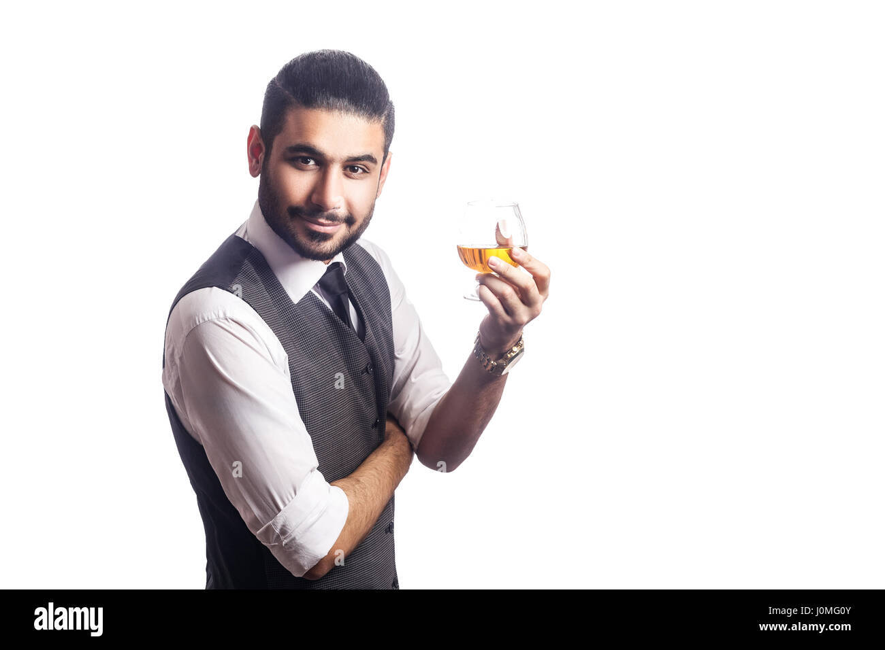

Jak to všechno začalo?
Náš růžový bar vznikl v roce 2022 díky společné touze několika přátel vytvořit místo, kde se budou lidé cítit jako doma, ať už přijdou na rychlý drink po práci nebo na dlouhý, zábavný večer s přáteli. Samotná budova baru má za sebou bohatou historii – byla původně domovem malého divadelního klubu. Rozhodli jsme se zachovat její specifickou atmosféru a přidat hravé prvky, které náš bar odlišují od ostatních.
Po měsících renovace a hledání unikátního stylu jsme otevřeli dveře pro všechny, kteří milují originální koktejly, kvalitní alkohol a příjemné setkání ve stylovém prostředí. Zachovali jsme původní cihlové zdi a přidali ikonické růžové neonové detaily, které dnes tvoří vizuální srdce našeho baru.
Postupně jsme si vydobyli pověst místa, kde se rodí nové příběhy – ať už během bouřlivých večírků, tichých rozhovorů ve dvou, nebo tematických barových nocí naplněných skvělou hudbou i atmosférou.

Naše ingredience – kvalita zaručena
Věříme, že základem skvělého drinku jsou poctivé a čerstvé ingredience. Proto v našem baru používáme výhradně prémiový alkohol a sirupy připravené podle vlastních receptur. Domácí sirupy vyrábíme z bio ovoce od regionálních farmářů a naše džusy lisujeme každý den čerstvé.
Rumy, giny, whiskey i likéry vybíráme od menších, často rodinných českých i zahraničních palíren, které kladou důraz na tradiční způsoby výroby a vysokou kvalitu. Voda na výrobu ledu i pro přípravu našich nápojů prochází čtyřstupňovou filtrací, abyste si mohli vychutnat každý doušek bez rušivých emelmentů.
Na ekologii nám záleží – proto se snažíme minimalizovat odpad, používáme opakovaně využitelné brčka a podporujeme lokální palírny. Věříme, že to, co servírujeme, odráží nejen náš osobní přístup, ale také respsket k přírodě i našim hostům.
Věříme, že základem skvělého drinku jsou poctivé a čerstvé ingredience. Proto v našem baru používáme výhradně prémiový alkohol a sirupy připravené podle vlastních receptur. Domácí sirupy vyrábíme z bio ovoce od regionálních farmářů a naše džusy lisujeme každý den čerstvé.
Rumy, giny, whiskey i likéry vybíráme od menších, často rodinných českých i zahraničních palíren, které kladou důraz na tradiční způsoby výroby a vysokou kvalitu. Voda na výrobu ledu i pro přípravu našich nápojů prochází čtyřstupňovou filtrací, abyste si mohli vychutnat každý doušek bez rušivých emelmentů.
Na ekologii nám záleží – proto se snažíme minimalizovat odpad, používáme opakovaně využitelné brčka a podporujeme lokální palírny. Věříme, že to, co servírujeme, odráží nejen náš osobní přístup, ale také respsket k přírodě i našim hostům.


Kde nás najdete a kdy máme otevřeno?
Najdete nás na adrese Národní 23, v samém centru města, doslova pár kroků od Národní třídy i kulturní čtvrti. Bar leží přímo naproti Náplavce, což z něj dělá ideální místo pro začátek i konec večera.
Prostředí baru nabízí jak moderní barovou zónu ideální na večerní posezení, tak klidnější koutky pro menší skupinky nebo páry, a v létě také oblíbenou venkovní zahrádku. Naši barmani pravidelně připravují tematické koktejlové menu a rádi vám poradí s výběrem podle vaší chuti.
Otevírací doba:
strawberry.bar.404error@gmail.com
– těšíme se na vaši návštěvu!
Najdete nás na adrese Národní 23, v samém centru města, doslova pár kroků od Národní třídy i kulturní čtvrti. Bar leží přímo naproti Náplavce, což z něj dělá ideální místo pro začátek i konec večera.
Prostředí baru nabízí jak moderní barovou zónu ideální na večerní posezení, tak klidnější koutky pro menší skupinky nebo páry, a v létě také oblíbenou venkovní zahrádku. Naši barmani pravidelně připravují tematické koktejlové menu a rádi vám poradí s výběrem podle vaší chuti.
Otevírací doba:
- Pondělí–Čtvrtek: 16:00 – 1:00
- Pátek–Sobota: 16:00 – 5:00
- Neděle: 17:00 – 2:00
strawberry.bar.404error@gmail.com
– těšíme se na vaši návštěvu!